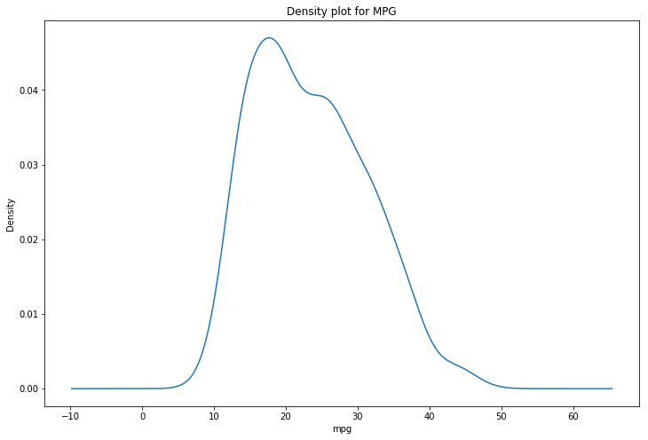
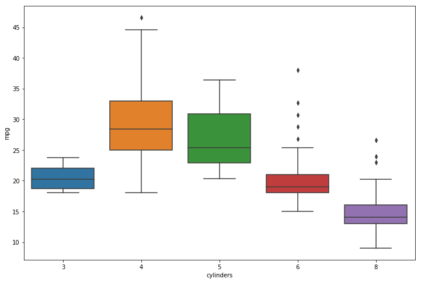
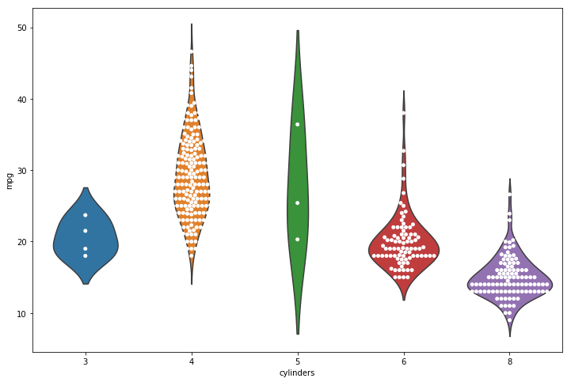
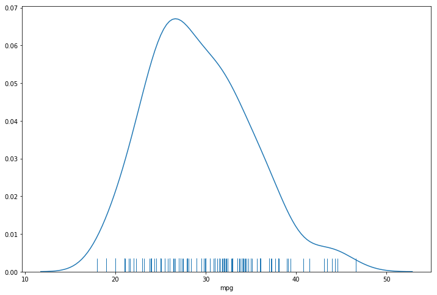
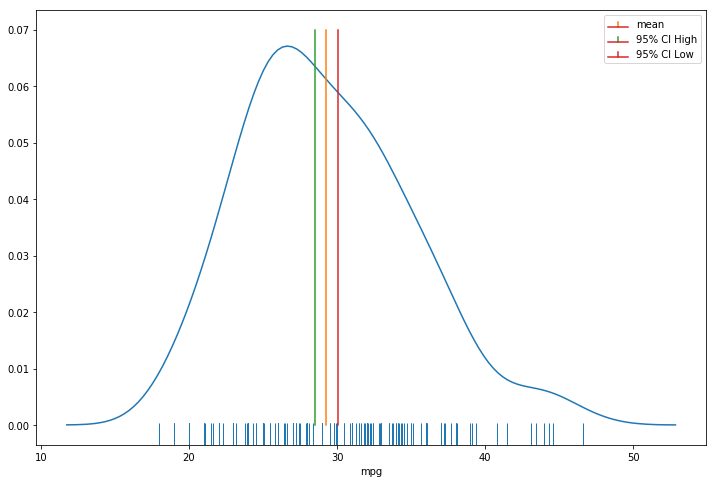
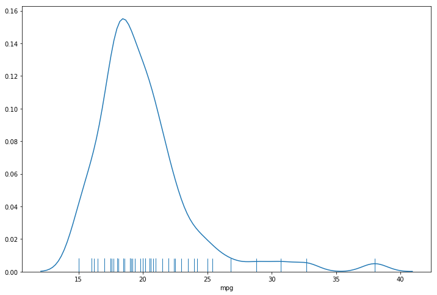
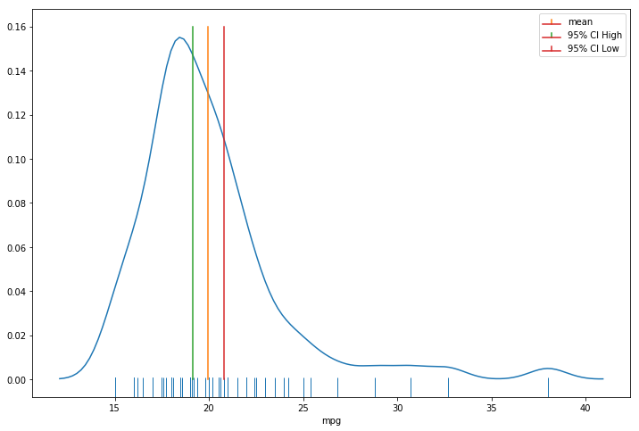

import math
import numpy as np
import pandas as pd
import matplotlib.pyplot as plt
import seaborn as sns
automobile_data = pd.read_csv('datasets/automobile_data_processed.csv')
automobile_data.sample(5)
| mpg | cylinders | displacement | horsepower | weight | acceleration | age | |
|---|---|---|---|---|---|---|---|
| 312 | 26.4 | 4 | 140.0 | 88 | 2870 | 18.1 | 39 |
| 275 | 16.2 | 6 | 163.0 | 133 | 3410 | 15.8 | 41 |
| 223 | 17.5 | 6 | 250.0 | 110 | 3520 | 16.4 | 42 |
| 322 | 40.8 | 4 | 85.0 | 65 | 2110 | 19.2 | 39 |
| 369 | 36.0 | 4 | 105.0 | 74 | 1980 | 15.3 | 37 |
automobile_data.shape
(392, 7)
automobile_data.boxplot('mpg', figsize=(12, 8))
plt.title('Miles per gallon')
Text(0.5, 1.0, 'Miles per gallon')
automobile_data['mpg'].plot.kde(figsize=(12, 8))
plt.xlabel('mpg')
plt.title('Density plot for MPG')
plt.show()

plt.figure(figsize=(12, 8))
sns.boxplot(x='cylinders', y='mpg', data=automobile_data)
plt.show()

plt.figure(figsize=(12, 8))
sns.violinplot(x='cylinders', y='mpg', data=automobile_data, inner=None)
sns.swarmplot(x='cylinders', y='mpg', data=automobile_data, color='w')
plt.show()

cylinder_stats = automobile_data.groupby(['cylinders'])['mpg'].agg(['mean', 'count', 'std'])
cylinder_stats
| mean | count | std | |
|---|---|---|---|
| cylinders | |||
| 3 | 20.550000 | 4 | 2.564501 |
| 4 | 29.283920 | 199 | 5.670546 |
| 5 | 27.366667 | 3 | 8.228204 |
| 6 | 19.973494 | 83 | 3.828809 |
| 8 | 14.963107 | 103 | 2.836284 |
ci95_high = []
ci95_low = []
for i in cylinder_stats.index:
mean, count, std = cylinder_stats.loc[i]
ci95_high.append(mean + 1.96 * (std / math.sqrt(count)))
ci95_low.append(mean - 1.96 * (std / math.sqrt(count)))
cylinder_stats['ci95_HIGH'] = ci95_high
cylinder_stats['ci95_LOW'] = ci95_low
cylinder_stats
| mean | count | std | ci95_HIGH | ci95_LOW | |
|---|---|---|---|---|---|
| cylinders | |||||
| 3 | 20.550000 | 4 | 2.564501 | 23.063211 | 18.036789 |
| 4 | 29.283920 | 199 | 5.670546 | 30.071789 | 28.496050 |
| 5 | 27.366667 | 3 | 8.228204 | 36.677755 | 18.055578 |
| 6 | 19.973494 | 83 | 3.828809 | 20.797216 | 19.149772 |
| 8 | 14.963107 | 103 | 2.836284 | 15.510863 | 14.415351 |
cylinders = 4
cylinders4_df = automobile_data.loc[automobile_data['cylinders'] == cylinders]
cylinders4_df.sample(10)
| mpg | cylinders | displacement | horsepower | weight | acceleration | age | |
|---|---|---|---|---|---|---|---|
| 184 | 27.0 | 4 | 101.0 | 83 | 2202 | 15.3 | 43 |
| 320 | 46.6 | 4 | 86.0 | 65 | 2110 | 17.9 | 39 |
| 324 | 43.4 | 4 | 90.0 | 48 | 2335 | 23.7 | 39 |
| 353 | 31.6 | 4 | 120.0 | 74 | 2635 | 18.3 | 38 |
| 175 | 23.0 | 4 | 115.0 | 95 | 2694 | 15.0 | 44 |
| 345 | 34.1 | 4 | 91.0 | 68 | 1985 | 16.0 | 38 |
| 101 | 26.0 | 4 | 97.0 | 46 | 1950 | 21.0 | 46 |
| 194 | 24.5 | 4 | 98.0 | 60 | 2164 | 22.1 | 43 |
| 147 | 24.0 | 4 | 120.0 | 97 | 2489 | 15.0 | 45 |
| 367 | 27.0 | 4 | 151.0 | 90 | 2735 | 18.0 | 37 |
plt.figure(figsize=(12, 8))
sns.distplot(cylinders4_df['mpg'], rug=True, kde=True, hist=False)
plt.show()

plt.figure(figsize=(12, 8))
sns.distplot(cylinders4_df['mpg'], rug=True, kde=True, hist=False)
plt.stem([cylinder_stats.loc[cylinders]['mean']],
[0.07], linefmt = 'C1',
markerfmt = 'C1', label = 'mean')
plt.stem([cylinder_stats.loc[cylinders]['ci95_LOW']],
[0.07], linefmt = 'C2',
markerfmt = 'C2', label = '95% CI High')
plt.stem([cylinder_stats.loc[cylinders]['ci95_HIGH']],
[0.07], linefmt = 'C3',
markerfmt = 'C3', label = '95% CI Low')
plt.xlabel('mpg')
plt.legend()
plt.show()

cylinders = 6
cylinders6_df = automobile_data.loc[automobile_data['cylinders'] == cylinders]
cylinders6_df.sample(10)
| mpg | cylinders | displacement | horsepower | weight | acceleration | age | |
|---|---|---|---|---|---|---|---|
| 153 | 15.0 | 6 | 250.0 | 72 | 3158 | 19.5 | 44 |
| 250 | 19.2 | 6 | 231.0 | 105 | 3535 | 19.2 | 41 |
| 200 | 17.5 | 6 | 258.0 | 95 | 3193 | 17.8 | 43 |
| 46 | 19.0 | 6 | 250.0 | 100 | 3282 | 15.0 | 48 |
| 112 | 21.0 | 6 | 155.0 | 107 | 2472 | 14.0 | 46 |
| 282 | 20.6 | 6 | 225.0 | 110 | 3360 | 16.6 | 40 |
| 15 | 22.0 | 6 | 198.0 | 95 | 2833 | 15.5 | 49 |
| 192 | 22.5 | 6 | 232.0 | 90 | 3085 | 17.6 | 43 |
| 190 | 22.0 | 6 | 250.0 | 105 | 3353 | 14.5 | 43 |
| 126 | 15.0 | 6 | 250.0 | 100 | 3336 | 17.0 | 45 |
plt.figure(figsize=(12, 8))
sns.distplot(cylinders6_df['mpg'], rug=True, kde=True, hist=False)
plt.show()

plt.figure(figsize=(12, 8))
sns.distplot(cylinders6_df['mpg'], rug=True, kde=True, hist=False)
plt.stem([cylinder_stats.loc[cylinders]['mean']],
[0.16], linefmt = 'C1',
markerfmt = 'C1', label = 'mean')
plt.stem([cylinder_stats.loc[cylinders]['ci95_LOW']],
[0.16], linefmt = 'C2',
markerfmt = 'C2', label = '95% CI High')
plt.stem([cylinder_stats.loc[cylinders]['ci95_HIGH']],
[0.16], linefmt = 'C3',
markerfmt = 'C3', label = '95% CI Low')
plt.xlabel('mpg')
plt.legend()
plt.show()
